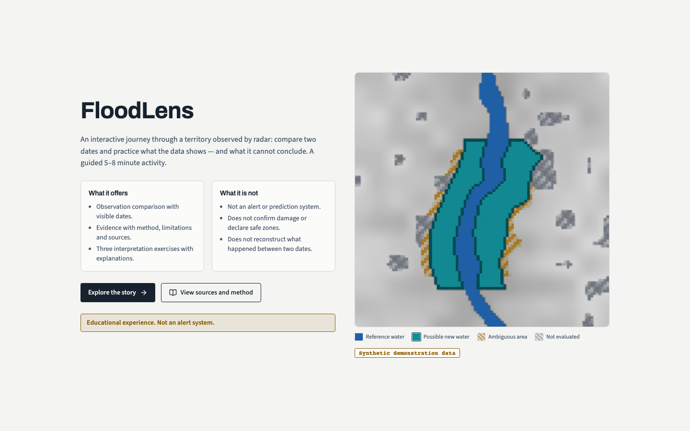
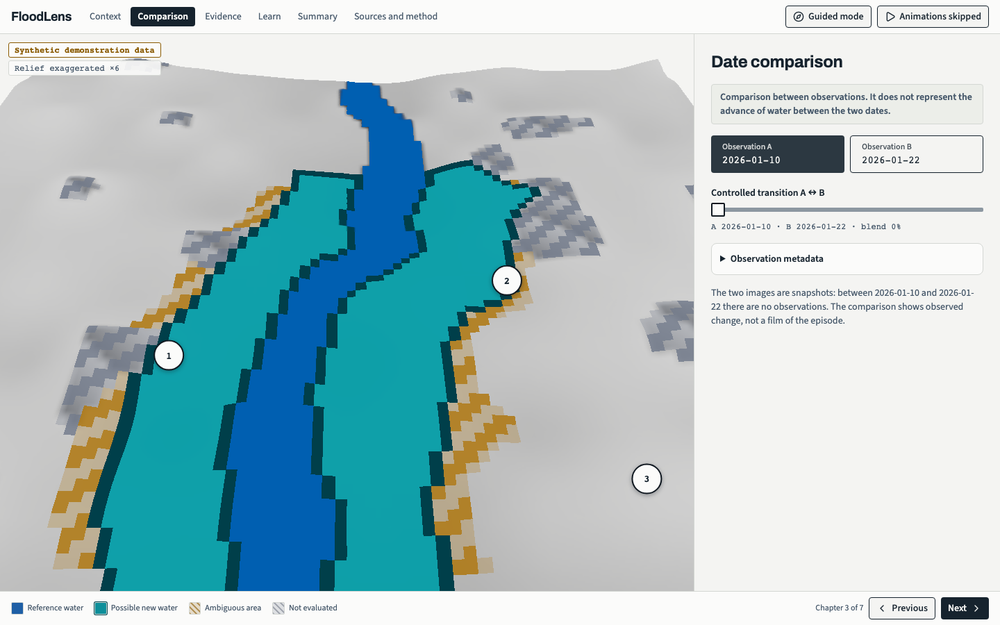
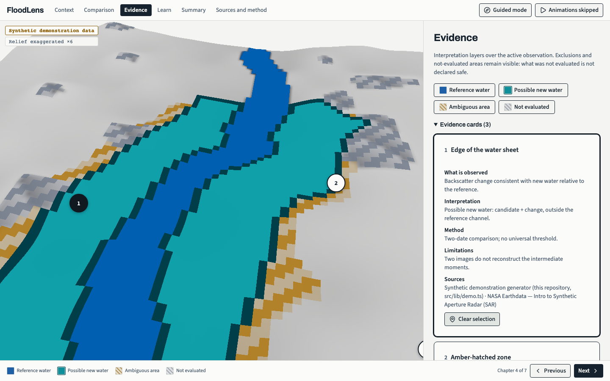
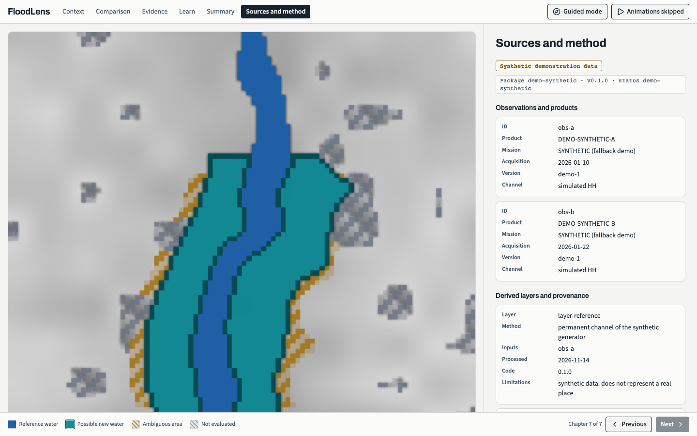
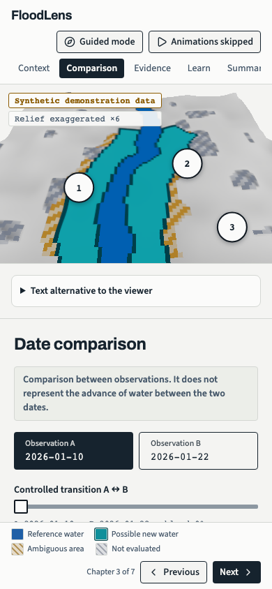

An educational journey with traceable radar observations. Compare two dates, read the evidence and practice interpretation. NASA Space Apps Challenge 2026 — Dancing with the SARs.
Radar sees through clouds and darkness. FloodLens walks six chapters from context to sources, keeping method and limitations attached to every claim.
What was not evaluated is never declared safe. Exclusions and ambiguous areas stay visible on the map and in the legend.
The slider moves between two real observation dates. The blend is a labelled percentage, never a date: no interpolation is presented as a measurement.
Reference, possible new water, ambiguous and not evaluated stay separate classes on the map and in the legend.


Reference water (blue), possible new water (teal), ambiguous (amber hatch) and not evaluated (grey hatch) are separate classes, each with colour and pattern.
Three exercises turn common radar-reading mistakes into corrected answers.
A zone shows no water in the image. Can it be called safe? No: sensor limits, geometry and layover can hide water. Absence of signal is not evidence of safety.
Mechanics: choose an answer, read the explanation, retry until supported by the evidence.
An element of the territory coincides with the water footprint. Does it prove damage? No: footprint shows possible extent, not impact on assets or people.
Mechanics: exposure needs ground truth and asset data the demo deliberately does not claim.
We have images from two dates. Do we know what happened every hour? No: two snapshots bound the change; anything between them is interpolation, not observation.
Mechanics: the blend slider is labelled as a percentage, never as a timestamp.
Answers persist locally; restart clears them. Keyboard and screen-reader paths work without WebGL.
30 m per analytical cell, never pixels. Relief is exaggerated ×6 for readability and labelled as such.
NASA Earthdata — Intro to Synthetic Aperture Radar (SAR)
NASA ARSET — remote sensing and SAR trainings
NISAR Data User Guide (ASF)
Limitations stated in-app: exploratory reading without in-situ contrast; synthetic products labelled DEMO-SYNTHETIC; NISAR on hold, no silent substitution.

An educational journey with traceable radar observations. NASA Space Apps Challenge 2026 — Dancing with the SARs.
React 19 · Three.js · Zustand · Zod · Vite 7 · Tailwind 4
34 unit tests + 18 end-to-end tests · MIT license
Demo video 27 s · this deck 7 slides
